Abstract
Object detection on heterogeneous edge devices must satisfy strict energy, latency, and memory constraints while still providing reliable perception for downstream autonomy. Existing energy-aware NAS methods often target limited deployment settings, while real energy remains difficult to optimize because it is highly device-dependent and costly to measure. We address these challenges with an energy-adaptive framework that combines an energy-aware XiResOFA search space, a two-stage energy estimator, and iterative search to identify a single energy-efficient base architecture. We then apply compound scaling to transform this base design into the XiYOLO family across deployment budgets, enabling interpretable accuracy–energy tradeoffs under sparse hardware measurements.
Experiments on PascalVOC, COCO, and real-device deployment show that XiYOLO achieves a stronger energy–accuracy tradeoff than YOLO baselines. On PascalVOC, the medium XiYOLO model reaches 86.15 mAP50 while reducing energy relative to YOLOv12m by 20.6% on GPU and 35.9% on NPU. On COCO, XiYOLO reduces energy relative to YOLOv12 by up to 53.7% on GPU and 51.6% on NPU at the small scale. The proposed two-stage estimator also improves sample efficiency over a joint predictor under few-shot adaptation with only 2–20 target-device samples.
Contributions
- We formulate energy-adaptive perception as the design of an energy-efficient base detector architecture that can be scaled across deployment budgets on heterogeneous edge devices, and we instantiate this idea with XiYOLO, whose medium PascalVOC model achieves the highest 86.15 mAP50 among all compared medium-sized detectors.
- We propose an iterative neural architecture search framework for object detection that progressively searches the backbone, FPN, and PAN to identify an energy-efficient base architecture. After scaling, XiYOLO achieves strong accuracy–energy tradeoffs on both PascalVOC and COCO.
- We introduce an energy-aware search space based on a novel XiResOFA block with controllable compression ratio, kernel size, and lite/full attention choices, enabling detector search over interpretable accuracy–energy tradeoffs. Randomly sampled XiResOFA medium models reduce average energy by 21.1% relative to the YOLOv12 medium baseline.
- We develop a two-stage energy approximation model that combines a generic architecture–device energy prior with a lightweight hardware-specific residual model, validated on HW-NAS-Bench under few-shot adaptation with only 2–20 target-device samples.
XiResOFA Search Block
A central design requirement of the search space is that its architectural choices should have a direct and interpretable relationship to both detection quality and hardware energy. The proposed XiResOFA block preserves a residual shortcut while introducing configurable architectural choices compatible with once-for-all search. This design makes the block both trainable and searchable, while allowing its internal structure to adapt to different accuracy–energy operating points.
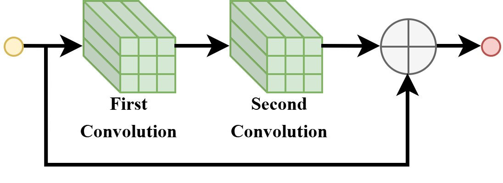
(a) Default Bottleneck Block
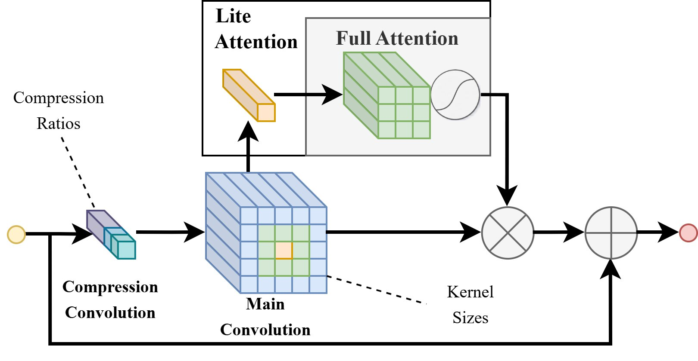
(b) XiResOFA Block
Comparison between the standard bottleneck block and the proposed XiResOFA block. XiResOFA augments a residual design with elastic architectural choices for energy-aware detector search.
Elastic Architectural Choices
Each XiResOFA block is parameterized by a tuple (r, k, t), where r ∈ {1, 0.5, 0.25} is the compression ratio, k ∈ {1, 3, 5} is the kernel size, and t ∈ {lite, full} is the attention type. These dimensions induce clear accuracy–energy tradeoffs across compute, memory traffic, and feature recalibration.
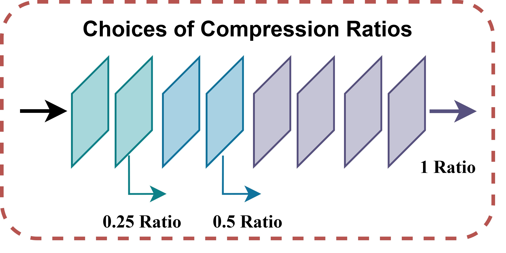
(a) Compression Ratio
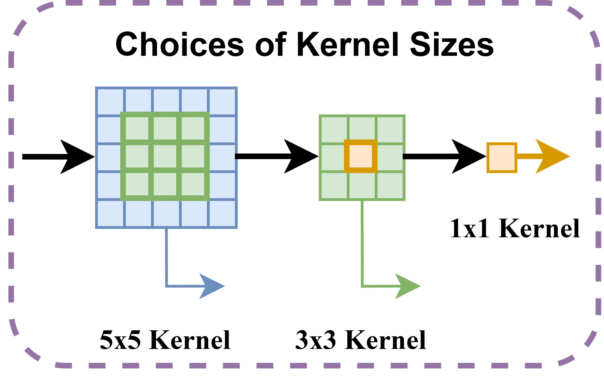
(b) Kernel Size
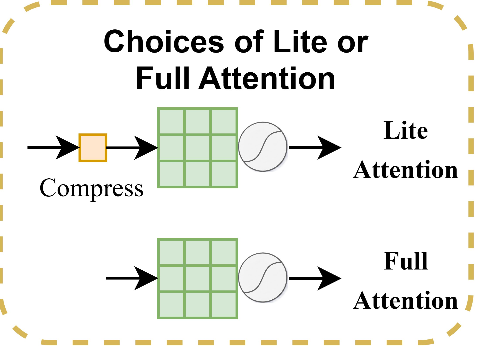
(c) Lite / Full Attention
Two-Stage Energy Estimation
A major obstacle in energy-aware detector search is that true hardware energy is expensive to measure at scale. Simple analytical surrogates such as FLOPs, MACs, or parameter count are insufficient because measured energy also depends on memory traffic, intermediate activations, operator composition, and hardware-specific execution behavior.
We decompose energy prediction into a generic prior and a device-specific correction: Ê(a, h) = fbase(a) + r(a, h). The first stage captures transferable architecture-level energy structure, while the second stage adapts that prior to device-specific effects such as backend implementation and memory hierarchy. The residual can be calibrated with only a few measured samples on the target device.
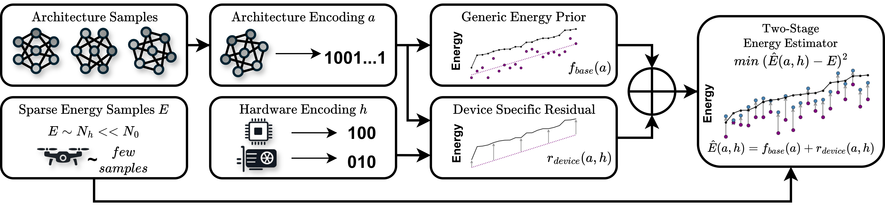
Sparse energy samples from the target hardware are combined with architecture and hardware encodings to learn a generic energy prior and a device-specific residual.
Accuracy–Energy Tradeoffs
We compare XiYOLO against YOLOv5, YOLOv8, YOLO11, and YOLOv12 on the ModalAI Sentinel Development Drone, which contains a Qualcomm QRB5165 CPU, a Qualcomm Adreno 650 GPU, and a 15 TOPS NPU. All models are exported to FP16 TFLite, and we measure energy per inference, latency, and detection accuracy. Power is monitored using the VOXL Power Module v3.
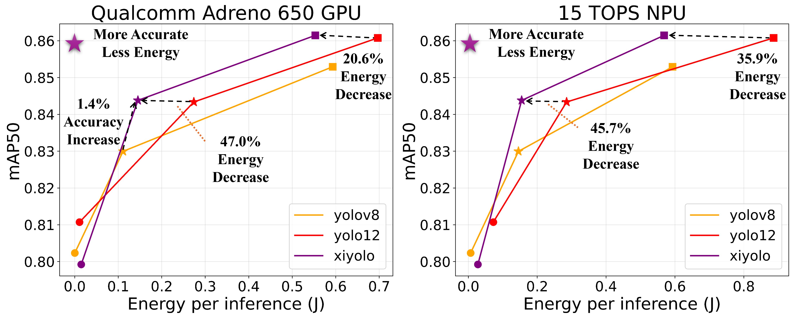
PascalVOC. XiYOLO achieves the strongest overall tradeoff on both GPU (left) and NPU (right). At the medium scale, XiYOLO reaches the highest 86.15 mAP50, improving over YOLOv12m by +0.07 mAP50, while reducing energy by 20.6% on GPU and 35.9% on NPU.
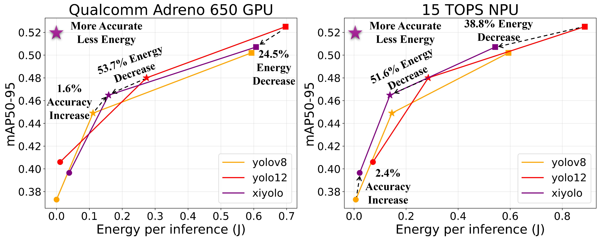
COCO. At the small scale, XiYOLO reduces energy relative to YOLOv12s by 53.7% on GPU and 51.6% on NPU, while improving accuracy by +1.6% mAP50-95 over YOLOv8s on GPU and +2.4% mAP50-95 over YOLOv12s on NPU.
Sustained Deployment Energy
Both XiYOLO-VOC and XiYOLO-COCO accumulate substantially less energy over time than the YOLO baselines on both devices. By the end of the run, XiYOLO-COCO uses roughly 65.6 J less cumulative energy than the strongest YOLO baseline on GPU and about 165.3 J less on NPU.
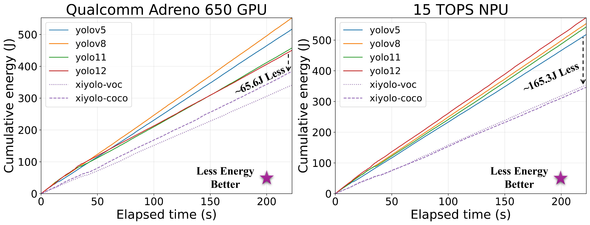
Energy consumption vs. time benchmarks against other YOLO-series detectors on the GPU (left) and NPU (right) for the medium model scales.
Few-Shot Energy Estimation on HW-NAS-Bench
We evaluate the proposed two-stage energy estimator under limited device-specific supervision on HW-NAS-Bench, using the NAS-Bench-201 search space with EdgeGPU and Eyeriss as target devices. For each target, we pretrain on the remaining hardware targets and fine-tune using only 2–20 target-device samples. The two-stage estimator achieves lower test RMSE than a joint model across nearly the full few-shot range, indicating more sample-efficient adaptation.

Two-stage energy estimator vs. joint model under few-shot adaptation with 2–20 samples on HW-NAS-Bench, on EdgeGPU and Eyeriss hardware targets.
Search Space Characteristics
Compared with the YOLOv12 medium baseline, randomly sampled XiResOFA models consistently occupy a lower-energy region, with average energy reduced by 21.1%. The iterative search space yields about 3.5% higher average predicted mAP50 than the global search space, suggesting that iterative decomposition concentrates search on stronger candidate regions.
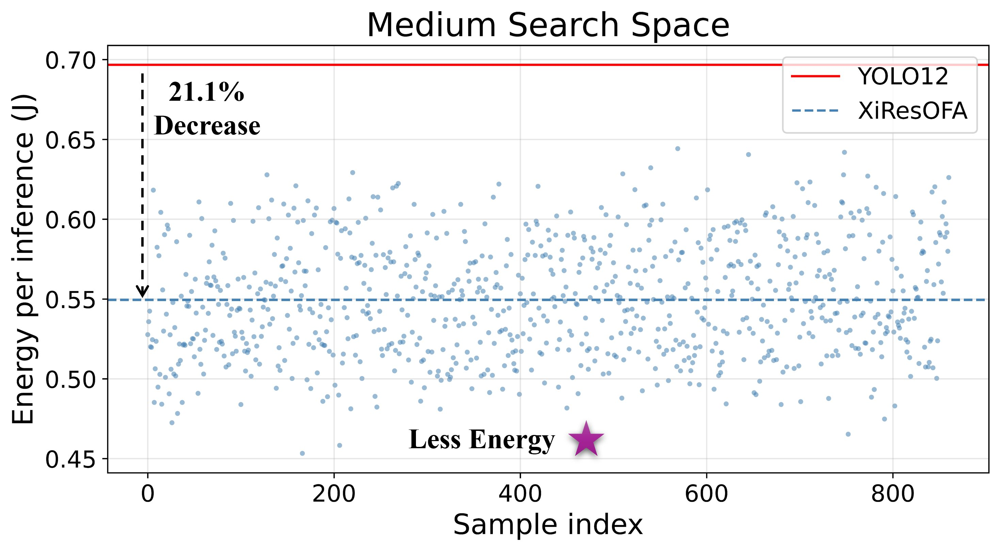
(a) Energy distribution of randomly sampled XiResOFA medium models.
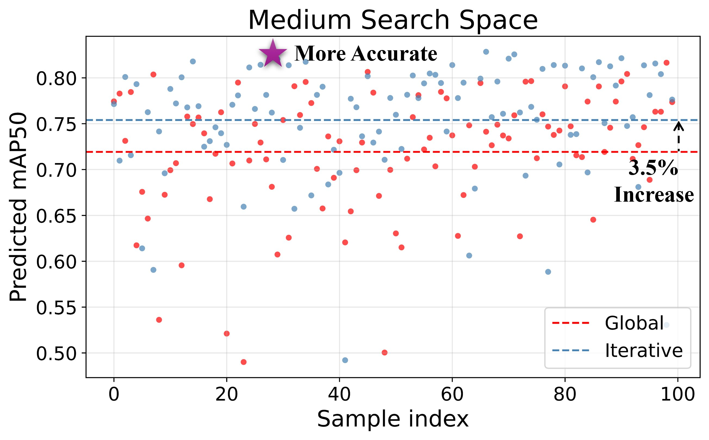
(b) Predicted accuracy of sampled models from global and iterative search spaces.
BibTeX
@article{tran2026xiyolo,
title={XiYOLO: Energy-Aware Object Detection via Iterative Architecture Search and Scaling},
author={Tran, Tony and Suganda, Richie R. and Hu, Bin},
journal={Preprint},
year={2026}
}